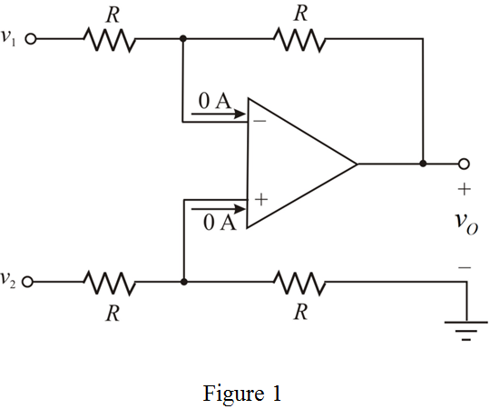
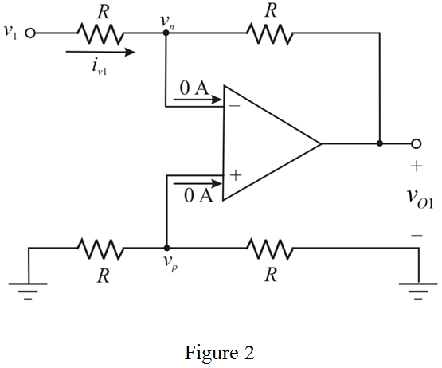
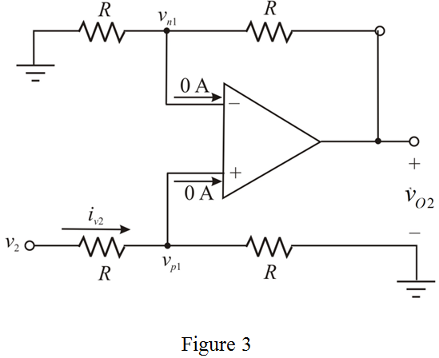
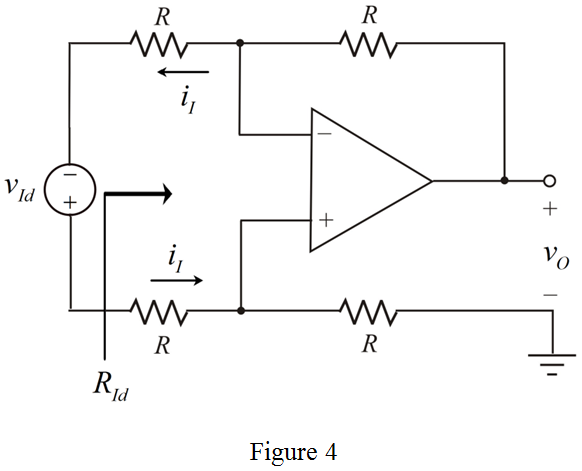
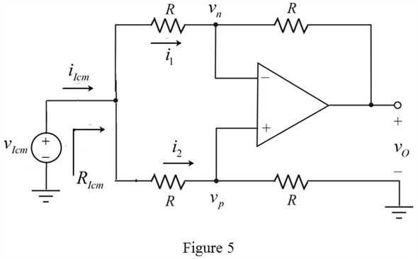

Step 1:
Refer to Figure to Figure P2.62 in the textbook.
The currents flowing into the inverting and the non-inverting terminals of an ideal operational amplifier are zero.
Redraw the circuit with the currents into the inverting and the non-inverting terminals.

Step 2:
Assume that  is the output due to input,
is the output due to input,  and
and  is the output due to the input,
is the output due to the input,  .
.
The output voltage using super position principle is, .
Redraw the circuit with only one source,  .
.

Here, is the voltage at the inverting terminal (negative terminal), is the voltage at the non-inverting terminal (positive terminal), and is the current due to source,  .
.
Step 3:
Apply Kirchhoff’s current law at non-inverting node of circuit in Figure 2.
The voltage at the inverting terminal due to virtual ground concept is, .
Apply Kirchhoff’s current law at inverting node.
Substitute 0 V for  in the equation.
in the equation.
Step 4:
Use Ohm’s law to calculate the input resistance seen by source, alone.
Substitute 0 V for in the equation.
Here, is the input resistance seen by the source, alone.
Thus, the input resistance, seen by  alone is,
alone is,  .
.
Step 5:
Redraw the circuit with only one source,

.

Here, is the voltage at the inverting terminal (negative terminal), is the voltage at the non-inverting terminal (positive terminal), and is the current due to source,  .
.
Step 6:
Apply Kirchhoff’s current law at non-inverting node of circuit in Figure 3.
The voltage at the inverting terminal due to virtual ground concept is,
Step 7:
Apply Kirchhoff’s current law at inverting node.

Substitute for in the equation.
Substitute for and  for
for  in equation for
in equation for  .
.
Thus, the total output voltage,  as a function of
as a function of  and
and  is, .
is, .
Step 8:
Use Ohm’s law to calculate the input resistance seen by source,  alone.
alone.
Substitute for in the equation.
Here, is the input resistance seen by the source,  alone.
alone.
Thus, the input resistance, seen by alone is, .
Step 9:
Redraw the circuit with the source connected between the two input terminals.

Step 10:
Apply Kirchhoff’s voltage law to the input loop to find the input resistance seen by source, connected between the two input terminals.
Thus, the input resistance,  seen by source connected between the two terminals is, .
seen by source connected between the two terminals is, .
Step 11:
Redraw the circuit with the source connected to both input terminals simultaneously.

Step 12:
Use voltage division method to calculate the voltage at the non-inverting terminal.
The voltage at the inverting terminal due to virtual ground concept is,
Use Ohm’s law to calculate the current,  .
.
Step 13:
Use Ohm’s law to calculate the current,  .
.
Calculate the input resistance seen by the source, .
Thus, the input resistance, with the source connected to both input terminals simultaneously is,  .
.